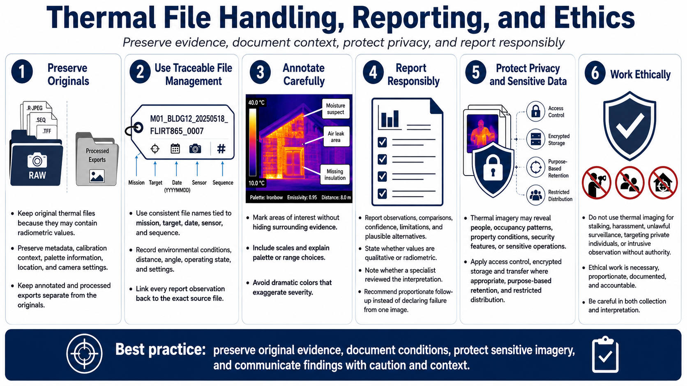

Data Handling, Reporting, and Ethics
Connecting to LMS... Progress: in progress

Narration
Preserve original thermal files because they may contain radiometric values, metadata, calibration context, palette information, location, and camera settings that exported screenshots lose. Keep annotated and processed versions separate.
Use consistent file names tied to mission, target, date, sensor, and sequence. Record environmental conditions, distance, angle, operating state, settings, and transformations. Link each report observation to the source file.
Annotations should identify areas of interest without hiding the surrounding evidence. Include scales and explain palette or range choices. Do not use dramatic colors to imply severity that the measurements and context do not support.
Report observations, comparisons, confidence, limitations, and plausible alternatives. State whether values are qualitative or radiometric and whether a specialist reviewed them. Recommend proportionate follow-up rather than announcing a failure from one image.
Thermal imagery may expose people, occupancy patterns, property conditions, security features, or sensitive operations. Apply access control, encrypted storage and transfer where appropriate, purpose-based retention, and restricted distribution.
Do not use thermal imaging for stalking, harassment, unlawful surveillance, targeting private individuals, or intrusive observation without authority. Ethical work is necessary, proportionate, transparent to accountable reviewers, and careful about both collection and interpretation.